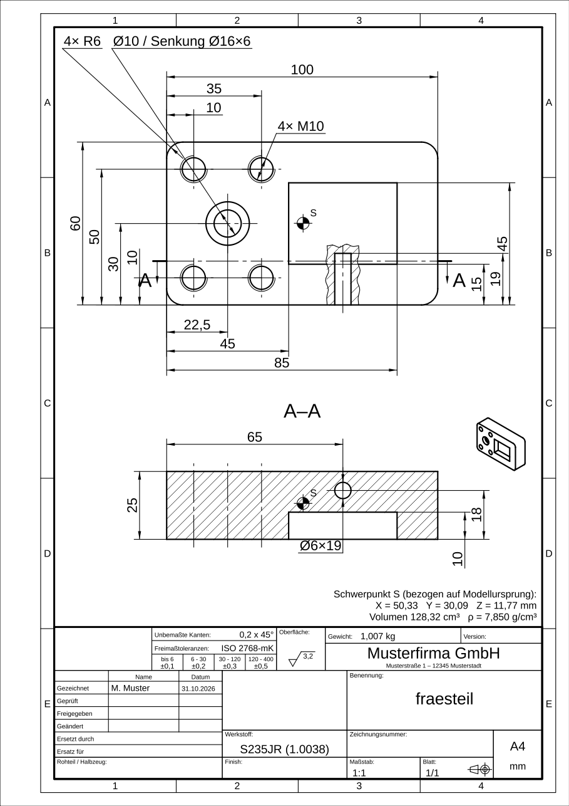
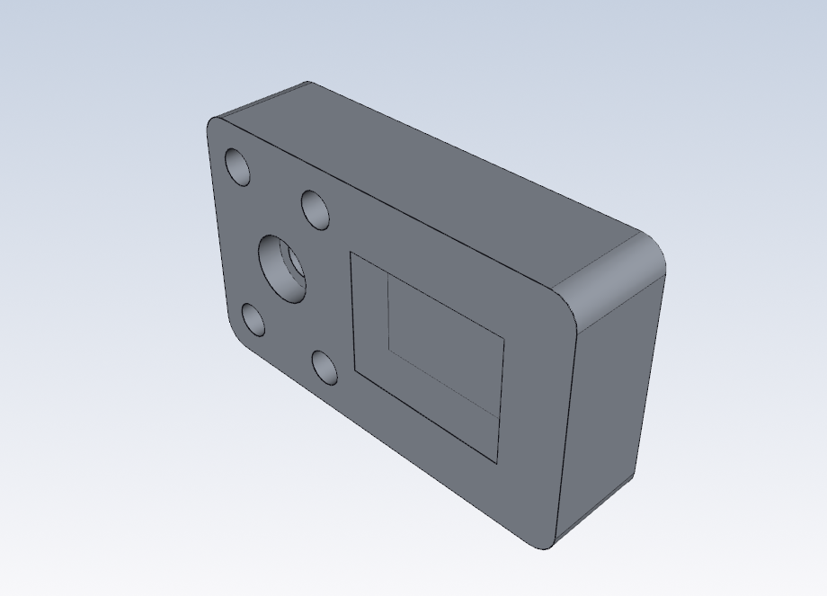
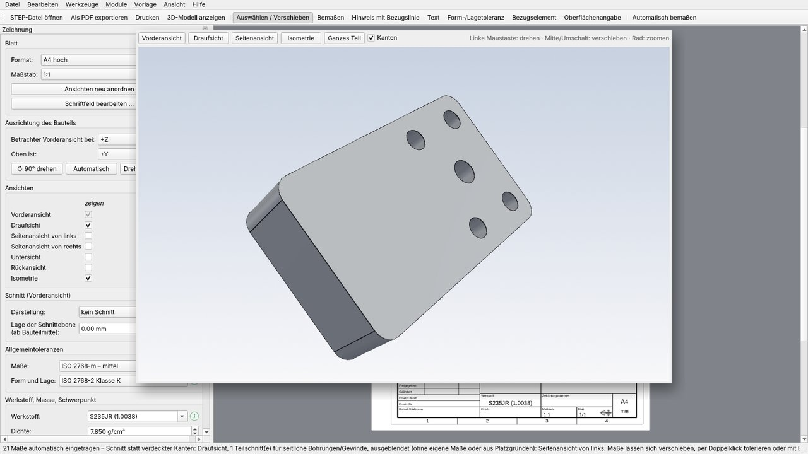

StepDraw CAD erstellt aus Ihrem 3D-Modell automatisch eine normgerechte Werkstattzeichnung – mit Bemaßung, Schnitten, Einzelheiten, Gewinden und Ihrem Schriftfeld. In Minuten statt Stunden.
Kostenlos testen Preise
Kein CAD-System nötig – StepDraw CAD liest das 3D-Modell direkt.
3D-Modell aus jedem CAD-System (STEP/STP) laden. Ausrichtung und Ansichten werden automatisch gewählt.
Ein Klick: Lagemaße, Durchmesser, Gewinde, Radien, Schnitte und Einzelheiten nach ISO 129-1 und ISO 128-3.
Bei Bedarf anpassen, dann als PDF, DXF oder direkt auf den Drucker – mit Ihrem Firmenschriftfeld.
Links das STEP-Modell, rechts die automatisch erzeugte Zeichnung.

STEP-Datei öffnen, automatisch bemaßen, 3D-Modell ansehen, drucken – so sieht die Arbeit mit StepDraw CAD aus.

Mit einem Klick (Taste F3) öffnet sich das Modell in einem eigenen 3D-Fenster – zum Prüfen, bevor Sie die Zeichnung freigeben.
Alles, was eine Fertigungszeichnung braucht.
ISO 129-1, je Bauteil passend: einzelne Maße oder Koordinatenbemaßung bei vielen Lagen.
Vollschnitt, Halbschnitt und Teilschnitt werden automatisch gewählt (ISO 128-3).
Enge Bereiche werden vergrößert dargestellt und dort bemaßt – auf Wunsch auf einem zweiten Blatt.
„4× M6“, „Ø10 / Senkung Ø16×6“ nach ISO 15786 und ISO 6410, Kernlöcher nach DIN 336.
Firma, Logo, Personen, Werkstoff mit Dichte, Masse und Schwerpunkt, Allgemeintoleranz ISO 2768.
Maßstabsgetreu auf A4 bis A0, mehrere Blätter, Druckvorschau, 3D-Ansicht des Bauteils.
Ihre Modelle und Zeichnungen verlassen Ihren Rechner nicht.
ISO 286 Passungen, Form- und Lagetoleranzen, Oberflächenangaben.
Regelmäßige Updates – das Programm meldet neue Versionen automatisch.
Preise und unser Gründer-Angebot für die ersten Kunden veröffentlichen wir zum Verkaufsstart am 30.11.2026.
Bis dahin ist StepDraw CAD als kostenlose Testversion erhältlich – probieren Sie es mit Ihren eigenen Modellen aus.
Kostenlos testenPreise ab Verkaufsstart am 30.11.2026. Eine Lizenz gilt für einen Rechner.
🎉 Gründerpreis −25 % für die ersten 20 Käufer: noch 20 von 20 verfügbar
Free-Version: dauerhaft kostenlos zum Testen – alle Funktionen, Ausgabe mit Wasserzeichen, ohne DXF-Export.
Für Unternehmen auch auf Rechnung: support@stepdraw.de
Windows 10/11 (64 Bit). Die Testversion ist voll funktionsfähig, Ausgaben tragen ein Wasserzeichen.
Download für Windows oder im Microsoft StoreStepDraw CAD nimmt Ihnen den größten Teil der Arbeit ab und wird mit jedem Update besser. Wie jede Automatik kann es aber nicht jeden Sonderfall perfekt lösen (z. B. bei ungenauen Modellen oder besonderen Fertigungsanforderungen). Bitte prüfen Sie jede Zeichnung vor der Verwendung in der Fertigung und ergänzen Sie sie bei Bedarf – die Verantwortung für die Zeichnung bleibt beim Konstrukteur.
Nein. Modelle und Zeichnungen bleiben auf Ihrem Rechner. Beim Abo wird lediglich etwa einmal pro Woche der Lizenzschlüssel kurz online bestätigt.
Nein. StepDraw CAD liest STEP-Dateien (AP203/AP214/AP242) aus jedem CAD-System direkt.
Eine Lizenz gilt für einen Rechner. Zum Wechsel (z. B. Büro → Laptop) melden Sie die Lizenz unter Hilfe → Lizenz ab und geben sie auf dem anderen Rechner ein. Ist ein Rechner defekt, schreiben Sie uns – wir geben die Lizenz frei.
Jederzeit über den Link „Abonnement verwalten“ in Ihrer Kaufbestätigung oder per E-Mail an support@stepdraw.de. Danach läuft StepDraw CAD als Free-Version weiter, Ihre Projekte bleiben erhalten.
Im Microsoft Store automatisch. Bei der Download-Version meldet das Programm neue Versionen beim Start – ein Klick genügt.
Danke! Im Programm unter Hilfe → Problem melden / Feedback schicken Sie uns die Beschreibung, auf Wunsch mit der Zeichnung als PDF. Oder schreiben Sie an support@stepdraw.de. Korrekturen kommen per Update.
U. a. ISO 128-2/-3, ISO 129-1, ISO 15786, ISO 6410, ISO 2768, ISO 286, ISO 5455, ISO 5457, ISO 7200.
Für Unternehmen ja – schreiben Sie an support@stepdraw.de.